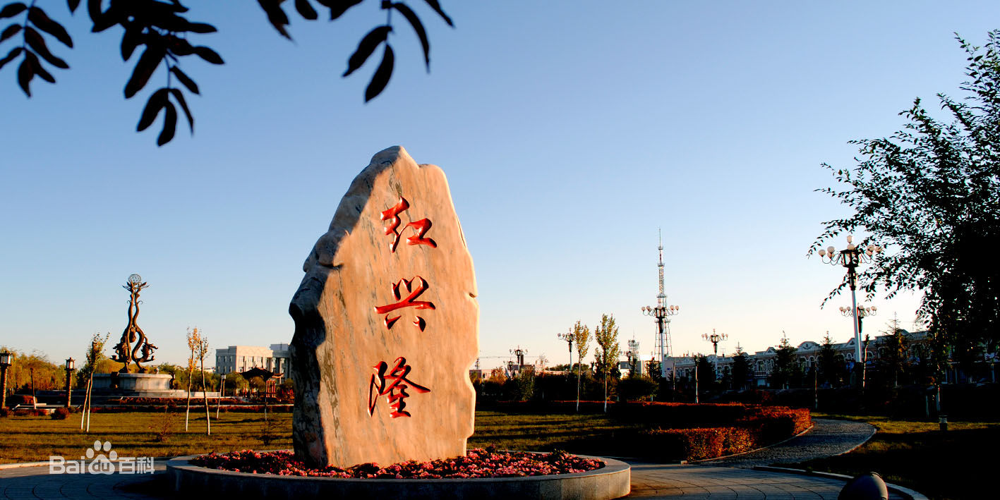

红兴隆最新动态介绍
红兴隆管理局位于三江平原中南部，地理坐标：东经129°55'~134°12'，北纬45°35'~47°17'。东西长330公里，南北宽170公里，海拔在40米--800米之间。区域东临乌苏里江，西至倭肯河畔，南靠完达山，北涉松花江、挠力河。所属十二个农场土地与三市八县（佳木斯、双鸭山、七台河三市和桦川、桦南、集贤、友谊、宝清、饶河、富锦、勃利八县）的土地穿插交错。辖区控制面积9650平方公里，是黑龙江省耕地面积较大的垦区之一。红兴隆是北大荒精神的发祥地，是中国农业现代化的发源地，是黑龙江垦区红色根据地。
辖区控制面积9650平方公里，其中耕地48万公顷，林地16万公顷，草原牧地2万公顷，水面草塘7.1万公顷。区域内国家级挠力河湿地自然保护区面积6.264万公顷。下辖12个国有农场，含4个北大荒农业股份分公司，总人口44万人，其中户籍人口34万人。
“十二五”以来，管理局以科学发展观为统领，围绕全产业链建设，实施农业立局、工业强局、城镇树局、文化兴局、旅游名局“五局”战略，生产总值由2010年的112.05亿元增加到2015年的202.9亿元，年均增长12.6%。人均国内生产总值由2010年的32886.8元提高到2015年的60655.1元，年均增长13%。三次产业比重从2010年的58.7：19.6：21.7调整为2015年的52.2：21.1：26.7。2015年全局居民人均可支配收入24218元，同比增长6.7%。

神奇北大荒、魅力红兴隆的知名度影响力显著提升。2014年，以红兴隆新城镇群为标志地的黑龙江垦区入选全球百座避暑旅游名城榜，名列第68位；红兴隆新城镇群凭借“田园酷美、农耕首善”的美誉，荣获“2015中国深呼吸小城100佳”，名列第5位。建成了中国首个以现代化大农业为主题的“中国农业公园”，赢得了“世界农都”“全国低碳国土试验区”等美誉。管理局被授予“全国法制创建先进单位”，管理局党委被省委授予先进基层党组织和“创业、创新、创优”活动先进集体荣誉称号，管理局被国家体育总局授予全国群众文化体育先进单位称号。2015年，红兴隆管理局局直被省委、省政府命名为省级文明城市，是垦区唯一获此殊荣的集体。
黑龙江农垦总局红兴隆分局有丰富的自然资源，全局有耕地40万公顷，平原地带地势平坦，水利设施齐全，基本上达到旱能灌涝能排。土质肥沃，集中连片，黑土、草甸土占70%，粮豆产量潜力大，盛产大豆、玉米、水稻、小麦、大麦等。经济作物有甜菜、西瓜、药材。[4] 分局有牧地草原2万公顷，可垦荒地7万公顷，水草丰盛，主要有羊草、茅草、厥草、芦苇、蒿草、水稞草、马兰草、大叶樟、小叶樟、乌拉草，适合发展畜牧养殖业。[4]
分局有林地16万公顷。树木种类有柞树、桦树、松树、黄菠萝、杨树、柳树、榆树、椴树、水曲柳。灌木有榛条、笤条、蒙古柳等。 分局地处完达山丘陵地，林木茂盛，野生动植物比较丰富。有价值的植物，药材类有大黄、桔梗、苦参、白芍、五味子、刺五加、平贝、益母草、冬青等。野生动物有东北虎、梅花鹿、獐子、黑熊、野猪、狍子、马鹿、獾子、乌苏里貉、狼、松鼠、野兔、黄鼠狼、刺猬等[4] 。在江河湖泡和湿地中有天鹅、丹顶鹤、野鸭、鸳鸯等珍禽，还有水獭、麝鼠。鱼类有鲑鱼、皇鱼、鲤鱼、鲢鱼、鲫鱼、粘鱼、胖头鱼。[5] 据探查区内有矿藏资源煤、铁、金、铬、铜、镍、大理石、蛇纹石、石英石、云母等10多种，其中，煤、铁、金等已开采。[6]
垦区地处松辽平原黑土带的北部，境内土壤属于冲积沼泽化土壤，共分为9个土类：草甸白浆土、草甸土、泛滥地土、岗地白浆土、黑土、水稻土、苏打草甸土、沼泽泥炭土、暗棕土。